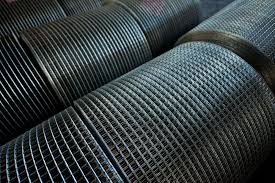

Environmental, Social & Governance
Protecting Our
Planet, Empowering
Our People
Kestrel Metal is accelerating sustainable industry — rapidly, responsibly and globally.

Our Commitment
Innovation only matters if it works in the real world.
At Kestrel Metal, we recognise that our operations have a profound impact on the environment, society, and the economy. Our research and development connects sustainability with metals and operations to build practical solutions that can be tested, refined and scaled under real conditions.
We're focused on environmental stewardship, social responsibility and governance — improving performance, reducing impact and helping decarbonise heavy industry.

Green Future
Our commitment to the environment is at the heart of everything we do.
We continually invest in advanced technologies and innovative processes that minimise waste, reduce emissions, and conserve natural resources. By implementing rigorous environmental management systems, we ensure that our operations not only comply with but exceed regulatory requirements.

Social Responsibility
We integrate sustainability directly into our operations.
At Kestrel Metal, we believe that our success is intertwined with the well-being of the communities we serve. We are dedicated to fostering a safe, inclusive, and supportive workplace where our employees can thrive.
Learn more about our peopleOur social responsibility initiatives extend beyond our workforce to encompass community engagement, education, and support for local development — making a positive impact through ethical practices and meaningful contributions to society.
Corporate Governance
We are dedicated to upholding the highest standards of corporate governance. Our commitment to ethical business practices, transparency, and accountability is fundamental to our operations.
Ethical Business Practices
Integrity and ethical conduct are at the core of our business philosophy. We adhere to a strict code of ethics that governs all aspects of our operations.
Transparency
We believe that transparency is essential to building and maintaining trust with our stakeholders through open and honest communication.
Accountability
We have established a robust system of checks and balances to ensure our actions are aligned with our strategic objectives and stakeholder interests.
Risk Management
We have implemented comprehensive risk management frameworks to identify, assess, and mitigate potential risks to our business.
Continuous Improvement
We regularly review and update our governance practices to align with global best practices and regulatory developments.
Certifications & Achievements
Our ESG commitment is validated through independent certifications and industry recognitions.
ISO 9001:2015
Quality Management System
ISO 14001
Environmental Management System
CE Marking
EU Compliance Certification
Industry Awards
Sustainable Manufacturing Excellence
See how we're building
a better future
Explore how we're applying technology across energy, equipment and industrial processes to help cut fossil fuels from our operations.